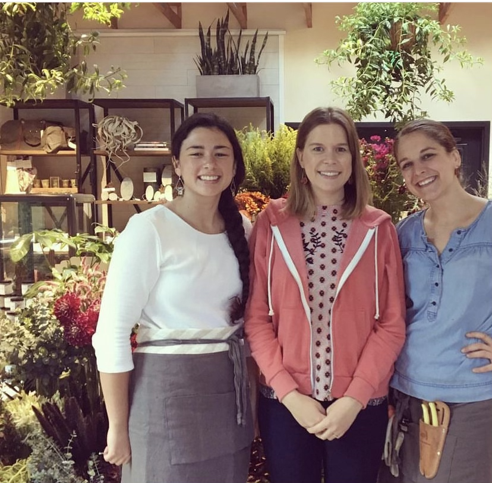
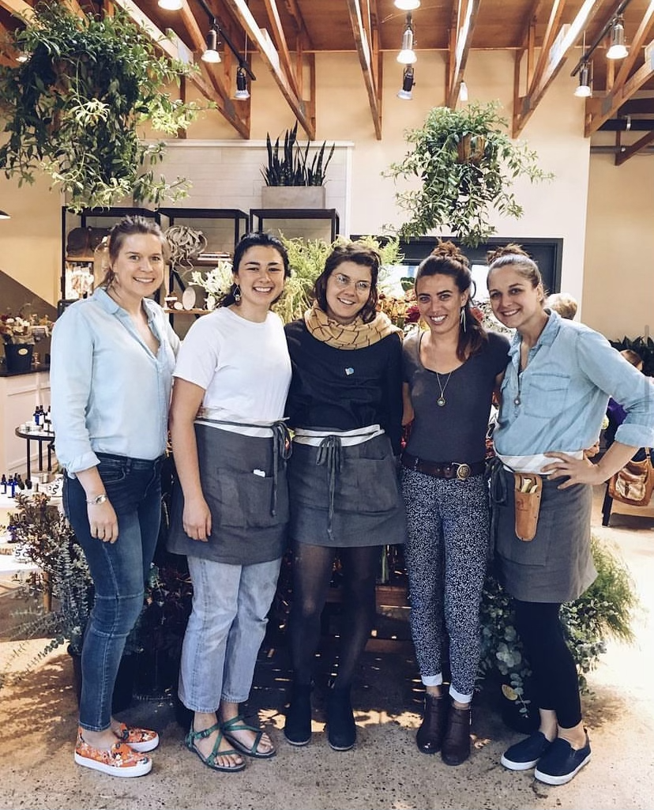
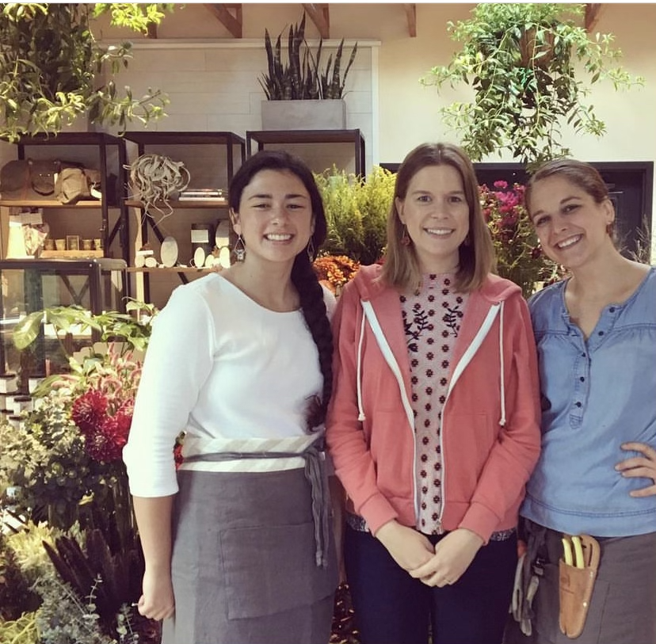
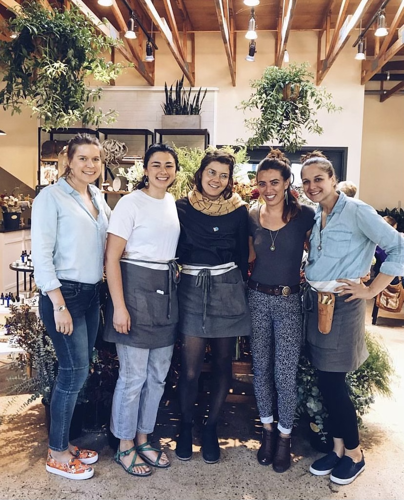

WORK STORY
Refining Ecommerce Operations at a Florist/Plant/Coffee Shop
While at Vault & Vine, I worked with the web developer and retail staff to refine our online bouquet ordering.


PROBLEM
The startup Florist/Coffee/Plant shop had a custom website with online ordering. The retail staff had a specific process for handling orders. To open the business we had to make sure it was working for us.
PEOPLE
I worked with the web developer and the retail managers to decide on the content, order flows, and delivery methods of the online ordering system. I also managed the Wordpress website after our system was in place.
MY ROLES
- Interview and understand the ordering procecss from the retail staff.
- Interview the web developer to understand our website, its limitations, and the way it operates.
- Develop content for products.
- Connect our system with payment methods.
- Train retail staff on how the website works.
- Manage content on the Wordpress website.
 



Process
Vault & Vine was a startup florist/coffee/plant shop, and I was managing the setup of operations in a few areas. The website was important so that we could start taking floral orders right away.
Using my experience as a freelance web designer, I was able to talk about the Wordpress website with the web developer, and understand how he programmed the website to take orders. I then talked with the florist department to understand their current system from a customer placing an order, to the creation and management of the process, to delivery or pickup. We also worked together to craft the product content for each bouquet, including occassions, the upgrades a customer could make, the varieties offered, and the delivery options.
Once we had our product information, I added them to the website. We practiced quite a few test runs to see how the platform worked. After it was in place I maintained the website products and ordering, including troubleshooting.
Challenges & Needs of Users
Comfort with Technology
There was a range of comfort with technology on this team, as the go-between I was able to relay the web developers information to the florists and vice-versa.
E-Commerce Limitations
Delivery by zipcode wasn't available with our system, the custom coding would've taken time and money. We came up with a flat fee for delivery. Also we had to use a 3rd party for processing payments that connected to point of sale system.
Customer Needs
- Customize the colors/occassion of a bouquet.
- Add a message to the bouquet.
- Add a card, or other gifts to the order.
- Select the date of pickup or delivery.
Florist Staff Needs
- Clear order instructions.
- Way to receive new orders.
- Contact information for the customer.
Outcomes
As the operations manager in a startup environment, I established an important function of the business through developing the online ordering process. Florist services were about a third of the business income, so it was essential to get the procedure right and working for everyone involved. It activated my skills in problem-solving, strategy, marketing, and web development.